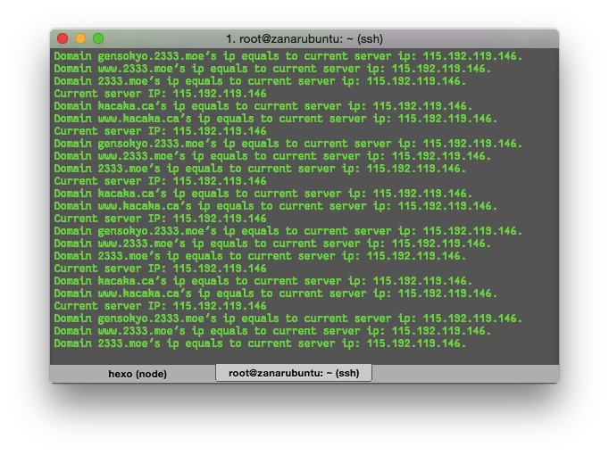

让我们用 Node.js 写自己的 DDNS 动态域名程序
起因
一开始我在移动的宽带中。那个时候虽然还不是完全的局域网，但是电信网络访问不了我的外网 IP。又因为我需要一个 DDNS 服务来维持我的 kacaka.ca（目前暂失效）。
为了解决让电信网络也能访问我的 Web，于是我想到了免费 CDN 当中比较有名的 CloudFlare。而且它也有提供 API 让开发者自己开发通过他的服务解析域名的服务。
再然后，去年的九月份，我的早期 Node.js 作品 dloucflare 发布了。所以就有了这个帖子。
现在，我已经搬到电信了，然后旧版的貌似不能用了，因为 CloudFlare 貌似 API 都迁移到了 https 上面。然后我为了我的小伙伴们能访问我出租屋里的旧电脑，又重构了一遍这个项目。
使用 dlouc-flare 构建
首先安装最新的 dlouc-flare 包：
$ npm install dlouc-flare |
然后去创建一个 DF 对象：
var DloucFlare = require("dlouc-flare"); |
CloudFlare 如何使用的话这里就不多做解释了，至于 API KEY 的话，可以在这里获取到。
然后调用 df.dynamicDomains 函数去把你这个域名下面的一些子域名加入你这个脚本的动态域名范畴当中：
df.dynamicDomains([ "@", "www", "子域名3", "子域名4", ... ], 检测时间间隔); |
其中
"@"代表的是域名没有www前缀的本身。检测时间间隔以毫秒为单位。
事实上，你也可以自定义一个检测你当前主机的 IP 地址的函数（如果你不喜欢用包内的默认检测 IP 函数）。
只要你写一个函数：
function checkIp(callback) { |
然后覆盖掉默认的 IP 检测函数即可：
df.getIpFunction = checkIp; |
最后保存退出并用 node 执行你的程序就好了，程序就会开始欢快地跑了。

如何自己写？
其实要完全自己写也是很简单的——无非就是调用一下 CloudFlare 的 API 而已。
我们定位明确就是要做 DDNS，所以没必要关系其它很多不相关的 API，只需要最基础的几个就够了。
API 解析
所有 API 的基础 URI 都为：https://www.cloudflare.com/api_json.html。
验证信息
根据 CloudFlare 文档所说，所有的提交都要黏上验证信息给 POST 过去。而验证的字段如下：
- tkn: 从你的个人页面当中复制出来的 API KEY。
- email: 你的登录邮箱。
- a: 操作名，每种操作都有其特有的操作名。
获取域名下的子域名记录
其操作名为 rec_load_all，我们不关心其它不重要的参数，只需要再传一个 z 字段代表其域名就好了，举个例子：
var self = this; |
上述代码就是把 param 数据给 POST 到 API 的 RESTful 里面去。然后根据返回值进行解析。
关于
DNSRecordObject的代码可以自行翻阅这里。以及 spidex 的文档在这里。
修改某记录
其操作名为 rec_edit，如文档所说，除了固有的几个参数之外，我们还需要有如下参数：
z:域名。id:域名记录编号，从rec_load_all中获取。type:记录类型。如A/CNAME等等。name:子域名名，如果无前缀子域名则与域名相同。content:值。如果我们只是做动态域名的话，这里的值就是 IP。service_mode:服务类型，填原值即可。ttl: TTL，填原值即可。
上面参数的解说只是对于我们要做 DDNS 脚本而言的解释。
所以说在 dnsrecordobject.js 中我是这么做的：
var param = { |
上面的代码就能将你某个域名（
this.domain）下的子域名this.name的 IP 给修改成ip了。
探测 IP
这种 API 网上就多了去了。
举个简单的例子，我的 dlouc-flare 的获取 IP 的 API 就是从
来的。
请求上面的地址之后，输出的内容（注意有换行符）就是你当前机子所在的网络的公网 IP 了。
类似的 API 还有很多：
- http://ip-api.com/json: 这个 API 就会输出一堆的 JSON，需要自行解析。
- http://ip.taobao.com/service/getIpInfo2.php?ip=myip: 这个是淘宝提供的 RESTful 获取 IP 的 API。
- …（其它的可以自己去发现）
流程
有了上面的仨 API，一切都好说了，流程很简单：
- 获取自己某个使用
CloudFlare解析的域名下的子域名。 - 自己设置几个子域名名拿来做 DDNS。
- 设置一个定时器，每次定时器到时的时候都进行如下操作：
- 通过 IP 的 API 获取当前 IP。
- 循环遍历每个自己设置的子域名名。
- 对于每个子域名，都判断其当前记录 IP 是否等于当前刚探测的 IP。
- 是：修改该子域名的记录值为刚探测的 IP。
- 否：不作任何操作。
有了上面的几个步骤，加上之前我们讲的几个 API，大家就能轻松加愉快地完成自己的 DDNS 脚本了。
当然，如果自己懒的话也可以用本文一开始的方法，使用 dlouc-flare 这个包，通过简单的编码就能实现自己的 DDNS 动态域名脚本了。
这里的定时器时间自己按需而定，就我自己而言，我是给设置了
1000 * 60毫秒的间隔。
小结
最早与动态域名结缘的时候是初中的时候，大概七八年前了吧，那个时候花生壳什么的，但是最终用的是 3322.org。
其实基本的动态域名的原理很简单，无非就是本地开一个脚本，不停去探测本机 IP，一旦有变化就去解析服务器修改。
本人在这里抛砖引玉。如果哪里有别的解析商的 API，大家自己也可以举一反三，写什么 DNSPod 的动态域名，写什么 jiasule 的动态域名等等等等。
喵~ଘ(੭ˊᵕˋ)੭* ੈ✩‧₊˚